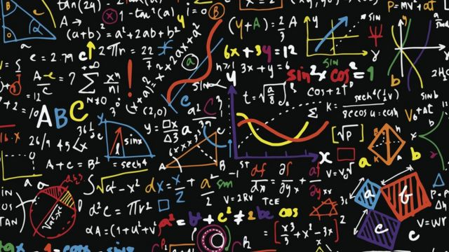

Menu
- Máterias básicas
- Materias especificas
Matematica

- Qual o resultado dessa operaçao: 1 + 1 = ?
| 11 | 1 + 1 | 2 | 22 | N.D.A
- Qual o resultado dessa operaçao: 1 - 1 = ?
| 0 | 1 + 1 | 2 | 22 | N.D.A
- Qual o resultado dessa operaçao: 1 + 1.5 = ?
| 11 | 1 + 1 | 2 | 2.5 | N.D.A
- Qual o resultado dessa operaçao: 10 / 2 = ?
| 11 | 5 + 1 | 2 | 22 | N.D.A
- Qual o resultado dessa operaçao: 9**3 = ?
| 11 | 1 + 1 | 2 | 729 | N.D.A
- Qual o resultado dessa operaçao: 1 + 1 = ?
| 11 | 1 + 1 | 2 | 22 | N.D.A
- Qual o resultado dessa operaçao: 2 + 1 = ?
| 3 | 1 + 1 | 2 | 22 | N.D.A
- Qual o resultado dessa operaçao: 88 - 80 = ?
| 81 | 8 + 1 | 2 | 88 | N.D.A
- Qual o resultado dessa operaçao: 12 / 2 = ?
| 11 | 1 + 1 | 6 | 22 | N.D.A
- Qual o resultado dessa operaçao: 1 + 10 = ?
| 11 | 1 + 1 | 2 | 22 | N.D.A